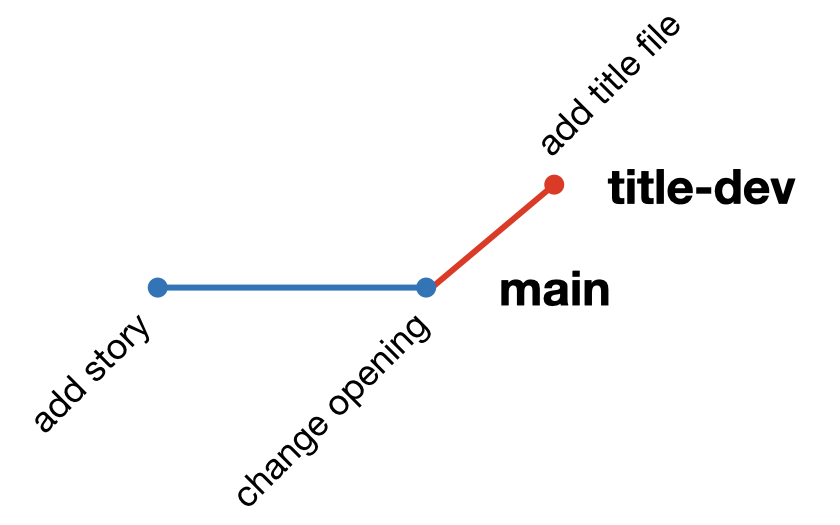
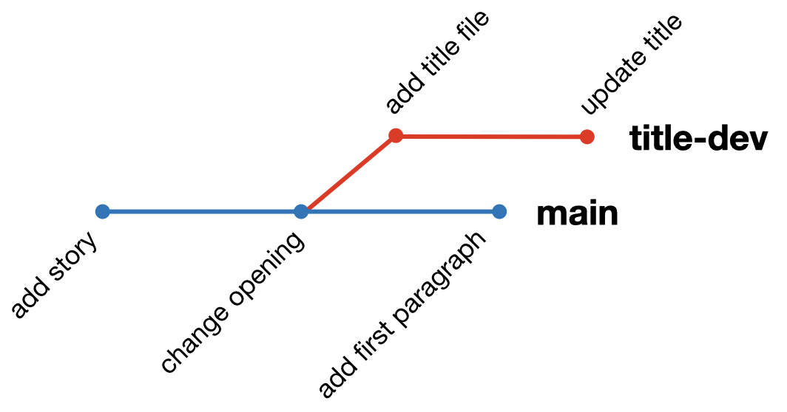
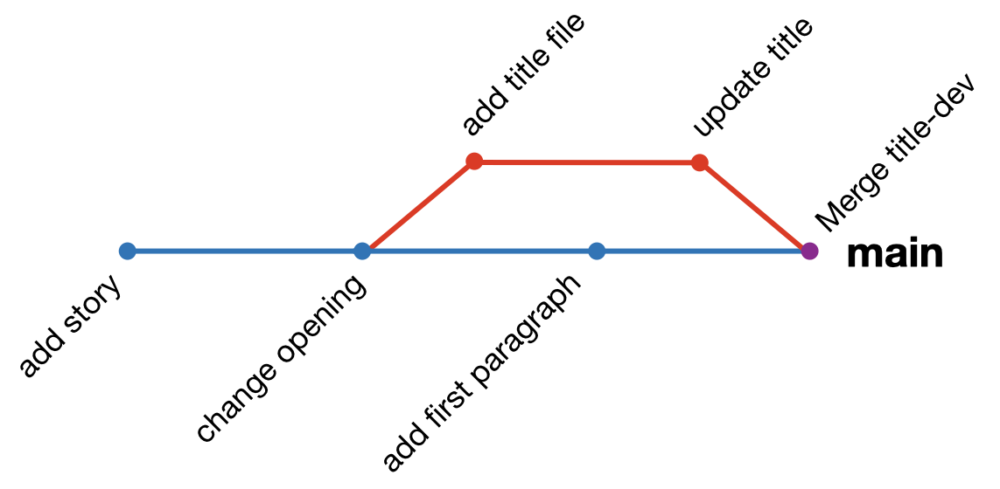
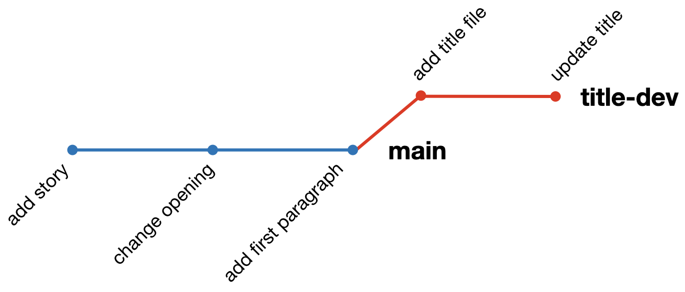
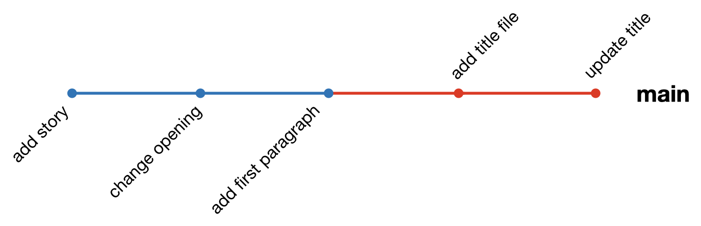

Exercise 1: Practice with git on a local repository
In this exercise you will initialize a git repository on your computer and explore various git commands with it.
Part 1: Initializing and adding files
Go to your home directory by typing:
cdCreate a directory called
test-git-repoandcdinto it:mkdir test-git-repo cd test-git-repoAt the moment,
test-git-repois just a normal directory, like any others. We want to turn this into a git repository and track changes to files made in this directory. To do that, run:git initNote that you have to run this from within the directory you want to turn into a repository.
test-git-repois now tracked bygit. Run:git statusto see what the status of the repo is. You should get:
On branch main No commits yet nothing to commit (create/copy files and use "git add" to track)Let’s add some files for git to track. Use your favorite text editor to create a file called
story.txtand add the following to it:Once upon a time, in a land far, far away...Save and exit the file, then type
lsto verify it’s there. Now rungit statusagain. You should have:
On branch main No commits yet Untracked files: (use "git add <file>..." to include in what will be committed) story.txt nothing added to commit but untracked files present (use "git add" to track)git knows you have a file in the directory called
story.txt, but it isn’t tracked by git yet!Tell git to start tracking
story.txtby usinggit add. Run the following:git add story.txtNow type
git status. You’ll see:On branch main No commits yet Changes to be committed: (use "git rm --cached <file>..." to unstage) new file: story.txtNotice that it still says there are no commits, but that on the next commit the file
story.txtwill be added. This means thatstory.txtis staged for the next commit.Commit the change by running:
git commit -m "add story idea"Now run
git status. You should getnothing to commit, working tree clean. Congratulations, you’ve made your first commit! To verify, run:git logto see the history of your commits. Since this is your first commit, there will only be one entry.
Part 2: Making changes to files
You’re not happy with your story opening. You don’t want to write fairy tales, you want to write SciFi! Use your favorite text editor to open
story.txtand change the lineOnce upon a time, in a land far,toA long time ago in a galaxy far,so that your file now reads:A long time ago in a galaxy far, far away...Much better. Now type
git status; you should see:On branch main Changes not staged for commit: (use "git add <file>..." to update what will be committed) (use "git restore <file>..." to discard changes in working directory) modified: story.txt no changes added to commit (use "git add" and/or "git commit -a")git recognizes that
story.txthas changed, but your changes have not been committed yet. You can see how the file differs from the last commit you did by typing:git diffLet’s commit your changes so you don’t lose them! We’ll stage the changes by running
git addagain:git add story.txt(Alternatively, you can just run
git add -uto stage changes to all tracked files that have changed.) Now we’ll commit the change, however, we’ll do it slightly differently than we did above. Just run:git commit(i.e., don’t include the
-margument). This will cause a text editor to open. The text editor that is used depends on yourgitsettings. Since we set git’s globalcore.editortonanoin the intro, nano will open up for you. Now you can type in a commit message. Type “change opening” then save by hitting<Ctrl>+O. When nano asks where to save to, just hit<Enter>to save to the default. Then hit<Ctrl>+Xto exit. This will complete the commit; you will be returned to the command line. To verify that the commit worked, run:git logYou’ll now see 2 commits in your history.
Note that there are two different ways to provide a commit message:
Provide the
-margument along with a short message in quotes when you rungit commiton the command line, like we did in Part 1, step 7 above; i.e, run:git commit -m "YOUR MESSAGE"In that case, the commit will be completed on the command line; no text editor will be opened.
Do not provide the
-margument. In that case, a text editor will open with which you can type the commit message. The commit will be created as soon as you save and exit from the editor. Note that if you exit the editor without saving, the commit will not be created. (You will be returned to the command line with the file changes still in the staged state.)
Either way is fine. Typically the second method is used if you want to write a more elaborate commit message that spans multiple lines, which is difficult to do on the command line.
Part 3: Branches
You want to start working on titles for your stories, but you want to do it independently of your work on the story itself. To do that, let’s create a branch to specifically work on titles.
Run
git branch. You should get back:* mainThis means there is currently only one branch, called
main. The*next tomainmeans that you are currently on the main branch. Let’s create a new branch for working on the titles. Run:git checkout -b title-devYou’ll get
Switched to a new branch 'title-dev'. To verify, rungit branchagain. Now you should see:main * title-devNotice that
story.txtis still here (typels) and that your git history is the same as before (typegit log). This is because when you create a branch, the branch will have all the same history and files as the main branch.Let’s create a file to store our title idea. Use your favorite text editor to create a file called
title.txtand put in it:STAR FIGHT!(You can also use
echoand the>operator on the command line to do this.) The title’s not great, but you can’t think of anything better at the moment.Now that you’ve created the file, run
git status; you should see thattitle.txtis untracked. Add it to be tracked and commit:git add title.txt git commit -m "add title idea"Now type
git log; you’ll see you have 3 commits in your history.Satisfied with your title for now, go back to your main branch to work on your story some more. Switch back to the
mainbranch by running:git checkout main(Notice that we don’t include the
-bflag this time. This is becausemainalready exists; we only add the-bwhen we want to create a new branch.) Verify that you’re on main by runninggit branch; you should get:* main title-devNote that the
*is now next to main.Now type
ls. Thetitle.txtfile is gone! To see why, typegit log. Your last commit is no longer in your history; you just have the first two commits. This is because your last commit (and the file it created,title.txt) only exists on thetitle-devbranch. To verify that it’s still there, you check the history of thetitle-devbranch by running:git log title-devIn graph form, your repository currently looks like this:

Here, each dot represents a commit, and the different lines represent a different branch. Following a line illustrates the history as seen by that branch. Since the commits on title-dev live on their own branch, changes you make on
mainwon’t affecttitle-devand vice versa (at least not until we merge the branches; more on that below).
You can git graphs like the above in your terminal if you add --graph to the git log command; i.e.
git log --graphLet’s make some more changes to
story.txt. Use your favorite text editor to openstory.txtand add the following lines:It is period of civil war. Rebel spaceships, striking from a hidden base, have won their first victory against the evil Galactic Empire.Stage the change and commit it:
git add -u git commit -m "add intro paragraph"Now type
git log: you should have 3 commits, none of which include the commits totitle-devbranch.In a flash of brilliance, you get an idea for the title of your story. Quick! Switch to your
title-devbranch by typing:git checkout title-devYou can verify that you’re on the
title-devbranch by typinggit branch. Now use your favorite text editor to opentitle.txtand changeSTAR FIGHT!to:Star Wars A NEW HOPE by George LucasNice work, George! Now save and exit. Stage the change and commit it:
git add -u git commit -m "update title"Type
git logto check your history. Note that there are 4 commits here: the first two frommain(before you branched off), and the last two ontitle-dev. In graph form, your repo looks like this:
Satisfied that your title is perfect, you no longer feel the need to keep the title development on a separate branch. It’s ready to be merged on to the
mainbranch. To do that, switch to the main branch:git checkout mainand merge in the changes on
title-devby typing:git merge title-devThis will open up your text editor (which we set to
nanoin the intro). Don’t change the commit message, just save and exit to return to your terminal.Now type
git log. You should see 6 commits: the initial two commits on main, the first commit on title-dev, the add paragraph commit on main, and the update title commit you made on title-dev, followed by an additional “Merge” commit. This final “merge” commit is to indicate that some of the commits in the history came from another branch (and what the name of the branch was).If you type:
lsyou’ll see that both
story.txtandtitle.txtare in your directory (on the main branch), and if you look in them, you’ll see the most up-to-date versions of both. In graph form, your main branch now looks like:
There is another way to merge branches called rebasing. Rebasing changes the history of the development branch to make it look like all the commits came after the last commit on main. This makes for a cleaner history when merging, but can be more challenging to do correctly. See the Appendix (below) for more information.
Now that you’ve merged your
title-devbranch, you can delete it to save space. To do that, run:git branch -d title-dev
If you had not merged everything on title-dev into main, you would have gotten an error preventing you from deleting the branch. The fact that you could delete it gives you confidence that everything on the development branch has been merged.
Challenge Questions: Editing the same file on different branches
In the above example we only made changes to different files on our two branches: on main we only edited story.txt, while on title-dev we only edited title.txt. However, there is nothing stopping us from editing the same file concurrently on two different branches. The following questions will illustrate how that works.
Part 4: Resolving merge conflicts
As illustrated in the Challenge Questions, if the same lines in the same file are modified on two different branches, git will not know how to merge the changes. This is called a merge conflict. In this case, git will ask you to reconcile the differences. To illustrate, let’s try merging dev2 into main after making the changes to list.txt discussed in Question 3 above:
If you have not done so, try to merge
dev2intomainafter making the changes to the second line oflist.txtdiscussed in Question 3:git checkout main git merge dev2You should get the following:
Auto-merging list.txt CONFLICT (content): Merge conflict in list.txt Automatic merge failed; fix conflicts and then commit the result.To resolve the merge conflict, we must edit
list.txtourselves. Usenano(or your favorite text editor) to openlist.txt. You should see the following:delta <<<<<<< HEAD easy ======= echo >>>>>>> dev2 foxtrotgithas added the conflicting lines from both branches to the file, along with information about the two branches. The line as it appears onmainis prefaced with<<<<<<< HEAD. This indicates that the following line(s) is (are) how it appears on the branch being merged into. The line(s) is (are) followed by a=======.After the
=======the line(s) as it/they appear(s) on the branch being merged are shown. These are followed by>>>>>>> BRANCH_NAME(here,BRANCH_NAMEisdev2).We are free to edit the file anyway we like to resolve the conflict. You should remove the
<<<<,====, and>>>>lines thatgithas added, along with the edit you want to make to resolve the conflict.In this case, let’s keep the edit as it appears on
dev2, and remove the edit onmain. Delete the appropriate lines so that the file looks like:delta echo foxtrotThen save and exit the file.
Now that we are happy with the way
list.txtappears, add the file:git add list.txtNow
commitwithout the-m:git commitThis will open up your text editor. The commit message will already be set to
Merge branch 'dev2'. While you are free to modify this, it’s usually best to leave it as-is, as it indicates the merge. Save and exit the file.The merge conflict is resolved! If you type
git logyou will see the history with all the commits in it, as if you had a merged without any issue.
Merge conflicts happen, but can be fixed fairly easy. If there were multiple areas in a file that caused a conflict, the conflicting areas would all be surrounded by the same <<<<<<</=======/>>>>>>> lines that we saw above. You’ll want to search through the file for those to make sure you got all the conflicts. If multiple files had conflicts, git will make you resolve all of them before allowing the merge to complete.
Summary
That’s the basics of how to use git. In the following parts we’ll see how to use this with GitHub and how to collaborate with partners using git and GitHub.
Appendix: Rebasing
Before merging title-dev into master in step 8 above, we could have first done a rebase. If you rebase a development branch against its parent branch (in this case main) it will incorporate all the commits that were made on the parent after the development branch was originally created. To do so, the development branch’s history is rearranged so that the additional commits from the parent are placed before all commits that were made on the development branch.
For example, if we had run git rebase main while on the title-dev branch in Part 3, step 8 above, title-dev’s history would have been rearranged from:
to:

The advantage to rebasing is that when we merge a rebased development branch back into main no “Merge” commit is created, and the history on main is much simpler. So, in our story example, if we had done the following in step 8:
git checkout title-dev
git rebase main
git checkout main
git merge title-devThen main’s history would have looked like:

rather than the more complicated graph above.
The disadvantage to rebasing is it can be more challenging to handle merge conflicts. When rebasing, conflicts need to be handled at the point they are created in the development branch, rather once at the end when the merge occurs. If resolving a conflict affects a later commit on the development branch, it can cause a cascading series of conflicts that can be a challenge to untangle. The other challenge with rebasing is it can cause issues when collaborating with others on a development branch. Since rebasing changes the history of the branch, it can make it a challenge for your colleagues to keep their clones in sync with yours. For these reasons, rebasing is best for more advanced users.
For more on rebasing, see this article by the Atlassian corporation: Merging vs. rebasing.